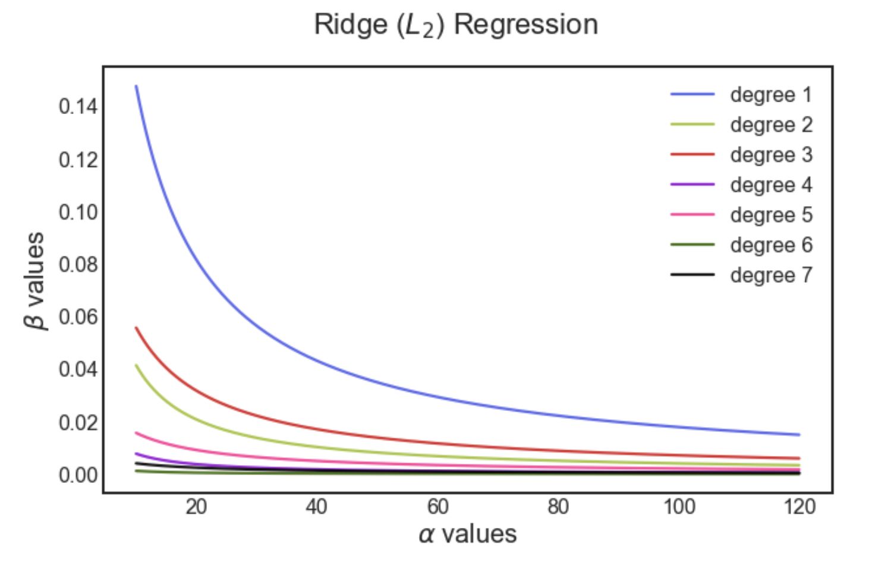

Key Word(s): Lasso, Ridge, Error, Bias, Variance, Regularization, Generalization
Title :¶
Exercise: Variation of Coefficients for Lasso and Ridge Regression
Description :¶
The goal of this exercise is to understand the variation of the coefficients of predictors with varying values of regularization parameter in Lasso and Ridge regularization.
Below is a sample plot for Ridge ($L_2$ regularization)

Data Description:¶
Instructions:¶
- Read the dataset
bateria_train.csvand assign the predictor and response variables. - The predictor is the 'Spreading factor' and the response variable is the 'Perc_population'
- Use a maximum degree of 7 to make polynomial features and make a new predictor x_poly
- Make a list of alpha values.
- For each value of
$\alpha$:- Fit a multi-linear regression using $L_2$ regularization
- Compute the coefficient of the predictors and store to the plot later
- Make a plot of the coefficients along with the alpha values
- Make a new alpha list as per the code in the exercise
- Implement Lasso regularization by repeating the above steps for each value of alpha
- Make another plot of the coefficients along with the new alpha values
Hints:¶
np.linspace() Return evenly spaced numbers over a specified interval.
np.transpose() Reverse or permute the axes of an array; returns the modified array.
sklearn.PolynomialFeatures() Generates a new feature matrix consisting of all polynomial combinations of the features with degree less than or equal to the specified degree.
sklearn.fit_transform() Fits transformer to X and y with optional parameters fit_params and returns a transformed version of X.
sklearn.LinearRegression() LinearRegression fits a linear model.
sklearn.fit() Fits the linear model to the training data.
sklearn.predict() Predict using the linear modReturns the coefficient of the predictors in the model.
mean_squared_error() Mean squared error regression loss.
sklearn.coef_ Returns the coefficients of the predictors.
sklearn.Lasso() Linear Model trained with L1 prior as a regularizer.
sklearn.Ridge() Linear least squares with L2 regularization.
Note: This exercise is auto-graded and you can try multiple attempts.
# Import necessary libraries
%matplotlib inline
import pandas as pd
import numpy as np
import matplotlib.pyplot as plt
from sklearn.linear_model import Lasso
from sklearn.linear_model import Ridge
from sklearn.preprocessing import PolynomialFeatures
# Helper code to alter plot properties
large = 22; med = 16; small = 10
params = {'axes.titlesize': large,
'legend.fontsize': med,
'figure.figsize': (16, 10),
'axes.labelsize': med,
'axes.titlesize': med,
'axes.linewidth': 2,
'xtick.labelsize': med,
'ytick.labelsize': med,
'figure.titlesize': large}
plt.style.use('seaborn-white')
plt.rcParams.update(params)
%matplotlib inline
# Read the file "bacteria_train.csv" as a dataframe
df = pd.read_csv("bacteria_train.csv")
# Take a quick look of your dataset
df.head()
# Set the values of 'Spreading_factor' as the predictor
x = df[[___]]
# Set the values of 'Perc_population' as the response
y = df[___]
# Select the degree of the polynomial
maxdeg = 4
# Compute the polynomial features on the data
x_poly = PolynomialFeatures(___).fit_transform(___)
# Get a list of 1000 alpha values ranging from 10 to 120
# np.linspace is inclusive by default unlike arange
alpha_list = np.linspace(___,___,___)
### edTest(test_ridge_fit) ###
# Make an empty list called coeff_list to store the coefficients of each model
coeff_list = []
# Loop over all alpha values
for i in alpha_list:
# Initialize a Ridge regression object with the current alpha value
# and set normalize as True
ridge_reg = Ridge(alpha=___,normalize=___)
# Fit on the transformed data
ridge_reg.fit(___, ___)
# Append the coeff_list with the coefficients of the trained model
coeff_list.append(___)
# Take the transpose of the list to get the variation in the
# coefficient values per degree
trend = np.array(coeff_list).T
# Helper code to plot the variation of the coefficients as per the alpha value
# Just adding some nice colors. make sure to comment this cell out if you plan to use degree more than 7
colors = ['#5059E8','#9FC131FF','#D91C1C','#9400D3','#FF2F92','#336600','black']
fig, ax = plt.subplots(figsize = (10,6))
for i in range(maxdeg):
ax.plot(alpha_list,np.abs(trend[i+1]),color=colors[i],alpha = 0.9,label = f'Degree {i+1}',lw=2.2)
ax.legend(loc='best',fontsize=10)
ax.set_xlabel(r'$\alpha$ values', fontsize=20)
ax.set_ylabel(r'$\beta$ values', fontsize=20)
fig.suptitle(r'Ridge ($L_2$) Regression')
plt.show();
Compare the results of Ridge regression with the Lasso variant¶
# Select a list of 1000 alpha values ranging from 1e-4 to 1e-1
alpha_list = np.linspace(___,___,___)
### edTest(test_lasso_fit) ###
# Initialize a list called to store the alpha value of each model
coeff_list = []
# Loop over all the alpha values
for i in alpha_list:
# Initialize a Lasso regression model with the current alpha
# Set normalize as True
lasso_reg = Lasso(alpha=___, max_iter=250000, normalize=___)
# Fit on the transformed data
lasso_reg.fit(___, ___)
# Append the coeff_list with the coefficients of the model
coeff_list.append(___)
# Get the transpose of the list to get the variation in the
# coefficient values per degree
trend = np.array(coeff_list).T
# Helper code below to plot the variation of the coefficients as per the alpha value
colors = ['#5059E8','#9FC131FF','#D91C1C','#9400D3','#FF2F92','#336600','black']
fig, ax = plt.subplots(figsize = (10,6))
for i in range(maxdeg):
ax.plot(alpha_list,np.abs(trend[i+1]),color=colors[i],alpha = 0.9,label = f'Degree {i+1}',lw=2)
ax.legend(loc='best',fontsize=10)
ax.set_xlabel(r'$\alpha$ values', fontsize=20)
ax.set_ylabel(r'$\beta$ values', fontsize=20)
fig.suptitle(r'Lasso ($L_1$) Regression')
plt.show();